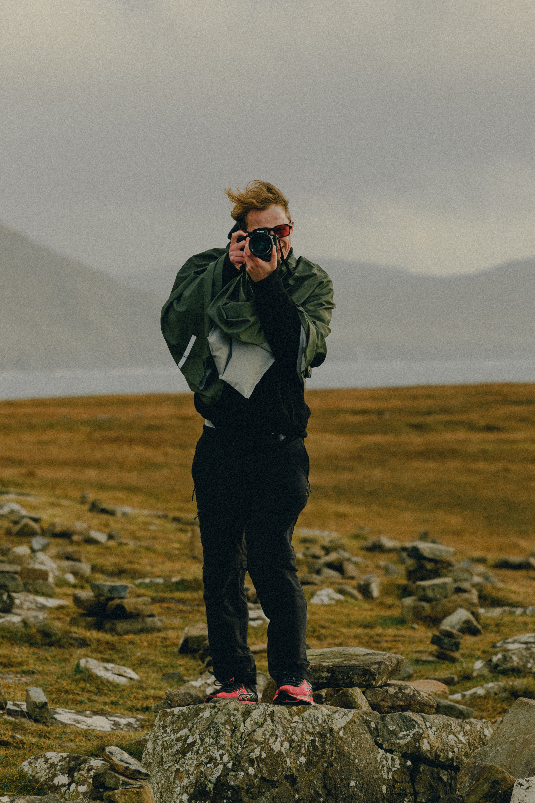

Möt Karl Hedin, en exceptionell fotograf vars verk bär på en unik förmåga att fånga ögonblickets skönhet och berätta historia. Med en passion för att utforska världen genom linsen har Karl utvecklat en konstnärlig signatur som kombinerar teknisk briljans med emotionell resonans. Hans bilder, utvalda för vår utställning på Artistic Allure, sträcker sig från majestätiska landskap till intima porträtt och belyser konstens kraft att kommunicera över gränser.
Karl Hedin är inte bara en mästare med kameran; han är också en resenär, en observatör och en konstnär som strävar efter att väcka känslor genom sina verk. Med en imponerande fotografisk karriär har Karl skapat en imponerande samling bilder som inte bara dokumenterar ögonblick utan också fångar själva essensen av dem. Utforska Karl Hedins värld genom hans fängslande bilder och upptäck konsten att se världen genom en unik och inspirerande lins.

Meg Wagener, den nyskapande konstnären bakom några av våra abstrakta mästerverk på Artistic Allure, tar oss med på en färgsprakande resa. Hennes konst är en lek med form och känslor, där varje penseldrag uttrycker en djupare berättelse.
Genom att bryta konventionella gränser och influeras av en mångfald av kulturer skapar Meg verk som är visuellt fängslande och emotionellt rika. Hennes abstrakta värld är en inbjudan att tolka konst på ett personligt plan, och Meg Wagener visar att skönheten i abstraktionen är både gränslös och djupt gripande. Utforska hennes konstnärliga värld och låt dig förtrollas av det oväntade och vackra.
Karsten Wine, en konstnär vars verk tar oss på en emotionell resa, har sina mästerliga skapelser utställda på Artistic Allure. Som person utstrålar Karsten en djup förståelse för mänskliga känslor och erfarenheter, vilket återspeglas i hennes konstnärskap.
Karstens konstverk, som pryder våra utställningsväggar, är en förening av kraftfulla uttryck och subtila nyanser. Hennes konstnärliga resa sträcker sig över tid, och varje verk bär på en unik berättelse om utforskande och självreflektion.
Djupt rotad i konstens värld har Karsten Wine under sin karriär skapat ett konstnärligt arv som utmanar och berör betraktaren. Utforska hennes verk på Artistic Allure och låt dig svepas med i en värld av konstnärlig rikedom och känslomässig komplexitet.
.jpg)